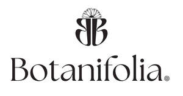

Trade Mark Journal No.2025/018 2 May 2025
UK00004186234 8 April 2025 (3,4)

- Class 3
- Cosmetics; Skincare cosmetics; Moisturisers [cosmetics]; Cosmetics and cosmetic preparations; Hair cosmetics; Skin fresheners [cosmetics]; Cosmetics for eye-lashes; Anti-aging moisturizers used as cosmetics; Cosmetics for suntanning; Organic cosmetics; Non-medicated cosmetics; Lip cosmetics; Nail cosmetics; Skin moisturizers used as cosmetics; Natural cosmetics; Mousses [cosmetics]; Cosmetics preparations; Make-up palettes containing cosmetics; Cosmetics in the form of lotions; Tanning oils [cosmetics]; Tanning gels [cosmetics]; Beauty care cosmetics; Facial creams [cosmetics]; Colour cosmetics; Cosmetics for animals; Self-tanning preparations [cosmetics]; Suncare lotions [for cosmetic use]; Eyebrow cosmetics; Tanning preparations [cosmetics]; Decorative cosmetics; Multifunctional cosmetics; Body creams [cosmetics]; Eye cosmetics; Milks [cosmetics]; After-sun oils [cosmetics]; Skin masks [cosmetics]; Cosmetics for eye-brows; Tanning milks [cosmetics]; Suntan oils [cosmetics]; Functional cosmetics; Facial gels [cosmetics]; Skin care cosmetics; Cosmetics for children; Suntan lotion [cosmetics]; Fluid creams [cosmetics]; Non-medicated cosmetics and toiletry preparations; Humectant preparations [cosmetics]; Emollient preparations [cosmetics]; Cosmetics in the form of creams; Powder compacts [cosmetics]; Sun-tanning preparations [cosmetics]; Cosmetic hair lotions; Suntanning oil [cosmetics]; After-sun milks [cosmetics]; Colour cosmetics for the skin; After-sun milk [cosmetics]; Cosmetics for use on the skin; Cosmetic moisturisers; Sunscreens [for cosmetic use]; Cosmetic creams and lotions; Bath powder [cosmetics]; Night creams [cosmetics]; Skin recovery creams [cosmetics]; Sun blocking lipsticks [cosmetics]; Body gels [cosmetics]; Cosmetics for the use on the hair; Cosmetic products in the form of aerosols for skincare; Body and facial creams [cosmetics]; Lip stains [cosmetics]; Sunscreen [for cosmetic use]; Sunscreen creams [for cosmetic use]; Body care cosmetics; Creams (Cosmetic -); Cosmetic creams; Cosmetic soaps; Cosmetics containing keratin; Cosmetics in the form of powders; Cosmetic skin fresheners; Hair care lotions [for cosmetic use]; Dyes (Cosmetic -); Cosmetic dyes; Cosmetics in the form of oils; After-sun lotions [for cosmetic use]; Beauty lotions; Cosmetics containing panthenol; Cosmetic facial lotions; Facial lotions [cosmetic]; Nail paint [cosmetics]; Cosmetic suntan lotions; Colour cosmetics for children; Perfume oils for the manufacture of cosmetic preparations; Skin care lotions [cosmetic]; Nail hardeners [cosmetics]; Nail tips [cosmetics]; Tissues impregnated with cosmetics; Anti-aging creams [for cosmetic use]; Sun protecting creams [cosmetics]; Cosmetic products for the shower; Nail primer [cosmetics]; Anti-ageing creams [for cosmetic use]; Smoothing emulsions [cosmetics]; Skin cleansers [cosmetic]; Liners [cosmetics] for the eyes; Perfumed powders [for cosmetic use]; Moisturising skin lotions [cosmetic]; Cosmetic creams for the skin; Skin creams [cosmetic]; Skin creams [for cosmetic use]; Body and facial gels [cosmetics]; Toiletries; Antiperspirants [toiletries]; Non-medicated toiletries; Talc [toiletries]; Roll-on deodorants [toiletries]; Sanitary preparations being toiletries; Sponges impregnated with toiletries; Mousses [toiletries] for use in styling the hair; Douching preparations for personal sanitary or deodorant purposes [toiletries]; Toiletry preparations; Non-medicated toiletry preparations; Non-medicated toilet soaps; Toilet soaps; Perfumed lotions [toilet preparations]; Paper hand towels impregnated with cosmetics; Laundry soaps; Oils for toiletry purposes; Bath lotions (Non-medicated -); Shower creams; Fragrance sachets for eye pillows; Liquid soaps for laundry; Shampoos; Bath and shower gels; Shampoo; Soaps and gels; Perfumed body lotions [toilet preparations]; Bath soaps; Bath and shower oils [non-medicated]; Shaving lotions; Aromatherapy lotions; Non-medicated toothpaste; Scented linen water; Shower gels; Sunscreen lotions; Aftershave lotions; Non-medicated shampoos; Bath and shower gels, not for medical purposes; Scented soaps; Refill packs for cosmetics dispensers; Soaps for toilet purposes; Non-medicated hair lotions; Bath gels (Non-medicated -); Shaving soaps; Liquid bath soaps; After-shave lotions; Aromatherapy creams; Aromatherapy preparations; Potpourri sachets for incorporating in aromatherapy pillows; Massage oils; Massage oils and lotions; Scented oils; Ethereal oils for fragrancing; Facial massage oils; Aromatic oils for the bath; Essences for fragrancing; Perfume oils; Body massage oils; Massage candles for cosmetic purposes; Oils for perfumes and scents; Peppermint oil [perfumery]; Massage oil; Aromatherapy pillows comprising potpourri in fabric containers; Bath oils; Bath oils (Non-medicated -); Non-medicated bath oils; Scented water for fragrancing; Massage oils, not medicated; Essential oils as perfume for laundry purposes; Natural oils for perfumes; Cedarwood perfumery; Lavender oil for cosmetic use; Non-medicated shower oils; Bath herbs; Bath oils for cosmetic purposes; Ethereal essences and oils; Shower oils; Non-medicated oils; Geraniol for fragrancing; Scented body lotions; Cosmetic massage creams; Potpourris [fragrances]; Non-medicated massage preparations; Rosemary oil for cosmetic use; Perfumed oils for skin care; Eucalyptus oil for cosmetic use; Distilled oils for beauty care; Mineral oils [cosmetic]; Facial oils; Scented bathing salts; Scented sachets; Fragrance sachets; Aromatic potpourris; Scented body lotions and creams; Scented oils used to produce aromas when heated; Perfumery and fragrances; Room fragrancing products; Citronella oil for cosmetic use; Cosmetic sun oils; Sun-tanning oils; Incense sachets; Cleansing lotions; Massage waxes; Perfuming sachets; Skin care oils [non-medicated]; Tissues impregnated with essential oils, for cosmetic use; Cuticle oils; Body oils; Oils for the skin; Natural oils for cleaning purposes; Shaving oils; Hair oils; Cosmetic oils for the epidermis; Baby oils; Body oils [for cosmetic use]; Oils for cleaning purposes; Natural oils for cosmetic purposes; Herbal extracts for cosmetic purposes; Extracts of flowers; Extracts of flowers [perfumes]; Flowers (Extracts of -) [perfumes]; Extracts of flowers being perfumes; Natural perfumery; Anti-aging skincare preparations; Skincare preparations; Anti-aging moisturizers; Anti-ageing moisturiser; Beauty serums; Acne cleansers, cosmetic; Facial moisturisers [cosmetic]; Non-medicated skincare preparations; Moisturising skin creams [cosmetic]; Suncare lotions; Beauty serums with anti-ageing properties; Anti-aging creams; Anti-ageing creams; Skin moisturisers; Anti-ageing serums for cosmetic purposes; Skin moisturizers; Skin moisturizer; Skin moisturiser; Skin balms [cosmetic]; Moisturisers; Cosmetic creams for skin care; Skin care creams [cosmetic]; Facial cleansers [cosmetic]; Anti-wrinkle creams [for cosmetic use]; Cosmetic nourishing creams; Skin cleansers; Moisturiser; Cleansing creams [cosmetic]; Moisturizers; Skin moisturizer masks; Anti-ageing serum; Hairstyling serums; Exfoliants for the care of the skin; Facial moisturizers; Non-medicated skin serums; Skin care oils [cosmetic]; Exfoliants for the cleansing of the skin; Anti-aging serum for cosmetic use; Beauty creams; Moisturising body lotion [cosmetic]; Skin lotions; Lotions for the skin; Beauty balm creams; Skin cleansing lotion; Skin toners [cosmetic]; Skin whitening creams; Creams (Skin whitening -); Hair care creams [for cosmetic use]; Facial creams [cosmetic]; Facial creams [for cosmetic use]; Sun care lotions [for cosmetic use]; Skin make-up; Exfoliating creams; Skin cleansers [non-medicated]; Hair moisturisers; Skin whitening preparations [cosmetic]; Moisturizing creams; Creams for tanning the skin; Cosmetics for use in the treatment of wrinkled skin; Skin cream [for cosmetic use]; Skin lotion; Anti-aging cream; Skin hydrators; Skin hydrators for cosmetic purposes; After-sun lotions; Hair care serums; Anti-wrinkle creams; Facial cleansers; Beauty creams for body care; Anti-wrinkle cream [for cosmetic use]; Cosmetic products in the form of aerosols for skin care; Cosmetic preparations for skin firming; Self-tanning preparations [cosmetic]; Exfoliant creams; Moisturising creams; Skin creams; Creams for the skin; Moisturising gels [cosmetic]; Hair moisturizers; Moisturizing preparations for the skin; Non-medicated skin lotions; Hydrating creams for cosmetic use; Hair care preparations, not for medical purposes; Cosmetics for personal use; Skin care creams, other than for medical use; Cleansers for intimate personal hygiene purposes, non medicated; Shampoos for personal use; Fragrances for personal use; Anti-wrinkle cream; Shaving cream; Sunscreen cream; Skin cream; Lip cream; Facial cream; Bath cream; Cream soaps; Hair cream; Cuticle cream; Cold cream; Shower cream; Eye cream; Cleansing cream; Hand cream; Base cream; Shoe cream; Camouflage cream; Nail cream; Aftershave moisturising cream; Mattifying gel cream; Body cream; Cream foundation; Cream for whitening the skin; Whitening the skin (Cream for -); Day cream; Boot cream; Night cream; Face cream (Non-medicated -); Facial cream [for cosmetic use]; Body cream soap; Nappy cream [non-medicated]; Skin cleansing cream; Wrinkle resistant cream; Cream cleaners (Non-medicated -); Shaving creams; Hair removing cream; Body mask cream; Non-medicated foot cream; Hair care lotions; Hair care serum; Hair care creams; Hair care masks; Hair care preparations; Hair care agents; Cosmetic hair care preparations; Oil baths for hair care; Skin care mousse; Beard care preparations; Skin care preparations; Hair shampoos; Hair shampoo; Facial care preparations; Essences for skin care; Hair styling lotions; Skin, eye and nail care preparations; Hair strengthening treatment lotions; Hand masks for skin care; Shampoos for human hair; Hair lotions; Baby hair conditioner; Hair serums; Skin care (Cosmetic preparations for -); Cosmetic preparations for skin care; Hair lotion; Lotions for face and body care; Hair conditioner; Hair emollients; Skin care products for animals; Soaps for body care; Hair protection lotions; Conditioners for treating the hair; Cleansing milks for skin care; Wax treatments for the hair; Cosmetic preparations for the hair and scalp; Foot masks for skin care; Body cleaning and beauty care preparations; Milky lotions for skin care; Horse oil cream for skin care; Hair treatment preparations; Hair nourishers; Hair balm; Hair relaxers; Hair styling gel; Hair grooming preparations; Beauty care preparations; Beauty preparations for the hair; Sun care lotions; Non-medicated skin care preparations; Hair dye; Nail care preparations; Hair conditioners for babies; Hair conditioners; Non-medicated hair shampoos; Hair permanent treatments; Hair rinses [for cosmetic use]; Hair bleach; Hair creams; Deodorants for body care; Hair styling waxes; Lip balm; Cleansing balm; Aftershave balm; Shaving balm; Lip balm [non-medicated]; Shave balm; Beard balm; Blemish balm creams; After-shave balms; Lip balms; Non-medicated balm for hair; Aftershave balms; Lip balms [non-medicated]; Non-medicated lip balms; Shaving balms; Baby bottom balm; Skin balms (Non-medicated -); Non-medicated skin balms; Balms (Non-medicated -); Hair balms; Foot balms (Non-medicated -); Skin cleansing cream [non-medicated]; Moisturising creams, lotions and gels; Lavender gel; Moisturizing body lotions; Shaving lotion; After-shave gel; Bath lotion; Salves [non-medicated]; After-sun creams; After-shave creams; Non-medicated cleansing creams; Moist wipes impregnated with a cosmetic lotion; Lip pomades; Aloe vera gel for cosmetic purposes; Pre-shave creams; Cleansing creams; Lip glosses; Gel scrub; Lip conditioners; Baby lotion; Scented body creams; Non-medicated skin clarifying lotions; Non-medicated stimulating lotions for the skin; Lip gloss; Emollient shampoos; Aloe soaps; Skin relief serum [cosmetic]; Refill packs for skin care cream dispensers; Facial lotion; Skin tonics [non-medicated]; Hand lotion (Non-medicated -); Moisturizing milk; Lip protectors (Non-medicated -); Aloe soap; Skin emollients [non-medicated]; Lip makeup; Lip gloss palettes; Preparations for the care of the body; Cosmetic preparations for body care; Non-medicated body care preparations; Body lotions; Body lotion; Body scrubs; Body wash; Body scrub; Body moisturisers; Body polish; Body shampoos; Cosmetic body scrubs; Body scrubs [cosmetic]; Face and body lotions; Hair and body wash; Body and facial oils; Moisture body lotion; Body creams; Soap; Detergent soap; Deodorant soap; Soap (Deodorant -); Bath soap; Shower soap; Shaving soap; Laundry soap; Soaps; Perfumed soap; Toilet soap; Antiperspirant soap; Soap (Antiperspirant -); Liquid soap; Soap powder; Handmade soap; Soap powders; Almond soap; Bars of soap; Creams (Soap -) for use in washing; Bar soap; Cosmetic soap; Skin soap; Waterless soap; Soap products; Liquid soap for laundry; Sugar soap; Loofah soaps; Carbolic soaps; Liquid bath soap; Cakes of soap; Soap (Cakes of -); Saddle soap; Soap sheets; Liquid soap for dish washing; Hand soap; Granulated soap; Dish soaps; Soap pads; Beauty soap; Industrial soap; Body soap; Cakes of toilet soap; Liquid soaps; Soap solutions; Cakes of soap for body washing; Perfumed soaps; Liquid soap used in foot bath; Almond soaps; Soap for brightening textile; Saddle soaps; Liquid soap used in foot baths; Sponges impregnated with soaps; Soap free washing emulsions for the body; Non-medicated soaps; Facial soaps; Soaps for laundry use; Granulated soaps; Hand soaps; Soap for foot perspiration; Foot perspiration (Soap for -); Soaps in gel form; Soaps for household use; Cakes of soap for household cleaning purposes; Soaps in liquid form; Soaps for brightening textiles; Soapy gels; Liquid soaps for hands and face; Refill packs for hand soap dispensers; Washing-up detergent; Dishwashing detergents; Pre-moistened towelettes impregnated with dishwashing detergent; Liquid laundry detergents; Shampoo bars; Powder laundry detergents; Washing balls filled with laundry detergents; Cloths impregnated with a detergent for cleaning; Foaming bath gels; Moist paper hand towels impregnated with a cosmetic lotion; Oral care preparations [non-medicated]; Sets of cosmetic oral care products; Dental care preparations for animals; Oral hygiene preparations; Lip care preparations; Tooth care preparations; Cosmetic preparations for the care of mouth and teeth; Non-medicated lip care preparations; Cosmetic nail care preparations; Hand cleaner; Furniture cleaner; Cleaner for cosmetic brushes; Carpet cleaners; Detergents; Laundry detergents; Liquid dishwasher detergents; Dishwasher detergents; Detergents for machine dishwashing; Detergent strengtheners; Commercial laundry detergents; Detergents for dishwashing machines; Biological laundry detergents; Detergent compositions for cleaning shoes; Laundry balls containing laundry detergent; Household detergents; Laundry detergents for household cleaning use; Foam detergents; Detergents for household use; Laundry balls filled with laundry detergents; Laundry starch; Toilet bowl detergents; Washing powder; Fabric softener for laundry use; Fabric softeners for laundry; Dishwashing liquid; Laundry powder; Dishwasher powder; Reed diffusers; Air fragrance reed diffusers; Scented wood; Scented linen sprays; Scented water; Fragrance emitting wicks for room fragrance; Scented ceramic stones; Scented room sprays; Scented wax melts; Wax melts [fragrancing preparations]; Wax (Depilatory -); Depilatory wax; Hair wax; Polishing wax; Wax (Polishing -); Boot wax; Mustache wax; Incense; Incense cones; Incense sticks; Incense spray; Bath oil; Pine oil; Jasmine oil; Shaving oil; Cleansing oil; Baby oil; Body oil; Mint for perfumery; Perfumery; Perfumeries; Musk [perfumery]; Vanilla perfumery; Perfumery products; Perfumed potpourris; Perfumed sachets; Fragrance refills for non-electric room fragrance dispensers; Room perfume sprays; Body deodorants [perfumery]; Potpourris; Perfume; Perfumes; Amber [perfume]; Fragrances; Cologne; Perfume water; Aromatics for perfumes; Liquid perfumes; Colognes; Scents; Aromatics for fragrances; Deodorants for personal use [perfumery]; Body fragrances; Fragrance preparations; Household fragrances; Room perfumes in spray form; Room fragrances; Aftershave; Feminine deodorant sprays; Solid perfumes; Perfumed powders; Perfumed creams; Eau de cologne; Eau de Cologne; Lavender water; Geraniol fragrancing compounds; Pomanders [aromatic substances]; Extracts of perfumes; Geraniol; Fragrant sachets; After-shave emulsions; Piperonal fragrancing compounds; Body mist; Scented fabric refresher spray; Scented fabric refresher sprays; Scented body spray; Shower and bath foam; Bath and shower foam; Bath foam; Foam bath; Body mask powder; Body mask lotion; Cleansing foam; Breath freshing sprays; Bath bombs; Bubble bath; Bath powder; Baby bubble bath; Bath salts; Bubble bath preparations; Bath gel; Shower and bath gel; Bath and shower gel; Bath and shower preparations; Shower and bath preparations; Preparations for use in the bath or shower; Preparations for the bath and shower; Bubble bath [for cosmetic use]; Cosmetic bath salts; Bath flakes; Bath milk; Cosmetic preparations for bath and shower; Bath creams; Bath beads; Bath gels; Bubble bath preparations [for cosmetic use]; Bath preparations; Preparations for the bath; Baby bath mousse; Bath crystals; Foams for the bath; Bath foams; Bath pearls; Bubble baths; Foam bath preparations; Foaming bath liquids; Non-medicated bath salts; Non-medicated bubble bath preparations; Bath soak for cosmetic use; Skin calming serum; Eye correction serum; Facial serum for cosmetic use; Tissues impregnated with a skin cleanser; Skin hydrators being injectable dermal fillers; Non-medicated scalp treatment cream; Non-medicated skin creams; Skin creams [non-medicated]; Skin emollients; Non-medicated moisturisers; Hair moisturising conditioners; Cosmetics containing hyaluronic acid; Oils for moisturising the skin after sunbathing; Creams for firming the skin; Cosmetics for the treatment of dry skin; Hair gel; Creams (Non-medicated -) for the body; Scalp treatments (Non-medicated -); Night creams.
- Class 4
- Candles; Candles and wicks for candles for lighting; Tealight candles; Votive candles; Scented candles; Wicks for candles; Candles for use as nightlights; Nightlights [candles]; Candles for lighting; Fragranced candles; Wicks for candles for lighting; Candles and wicks for lighting; Candles in tins; Perfumed candles; Candles (Perfumed -); Soy candles; Christmas lights [candles]; Candles for use in the decoration of cakes; Table candles; Tea light candles; Church candles; Fruit candles; Floating candles; Aromatherapy fragrance candles; Beeswax for use in the manufacture of candles; Candles for night lights; Wax for making candles; Candle wax; Musk scented candles; Tealights; Grave candles, non-electric; Christmas tree decorations for illumination [candles]; Christmas tree candles; Candles (Christmas tree -); Bougies in the nature of wax candles; Christmas tree ornaments for illumination [candles]; Candles for absorbing smoke; Candle assemblies; Wicks for lighting; Special occasion candles; Wicks for oil lamps; Wax lights; Lamp wicks; Wicks (Lamp -); Wax for lighting; Tea lights; Candles containing insect repellent; Tapers for lighting; Butane for lighting; Oils for fragrancing.
Anil Eryilmaz
Esma Esin Yildirim Eryilmaz